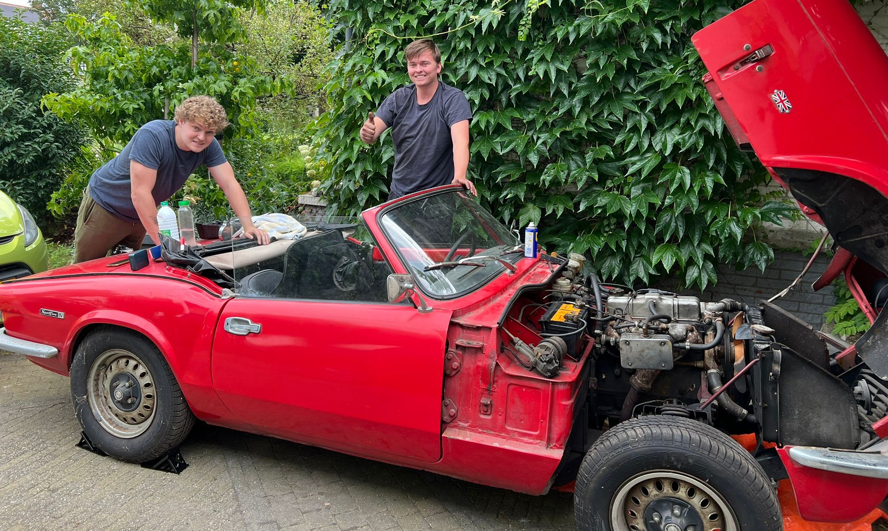

In this month we transported the car from the storage facility to my parants driveway.
You can see that the car had collected a of dust during the years. So the first step was cleaning the Spitefire.
After a thorough cleaning session, the car looked a lot better.
